DeepSeek Harness (DSH) vs Pi Agent: Everything You Need to Know
DeepSeek released its own agent harness this August.
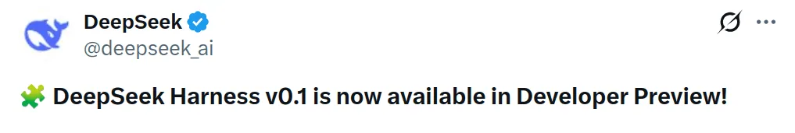
It crossed 66k stars in about a day (yes, sir!) and went over 200k by early September. That is already pretty crazy for something still in developer preview.
But while researching this post, I found something much more interesting. DeepSeek Harness actually uses Pi's model layer to connect to models outside DeepSeek. Yep.
DeepSeek's new agent runtime uses Pi under the hood for part of its model support. And Tianyi Cui, who leads the Harness project, has publicly said Pi is a favourite daily driver for many people at DeepSeek. Lol.
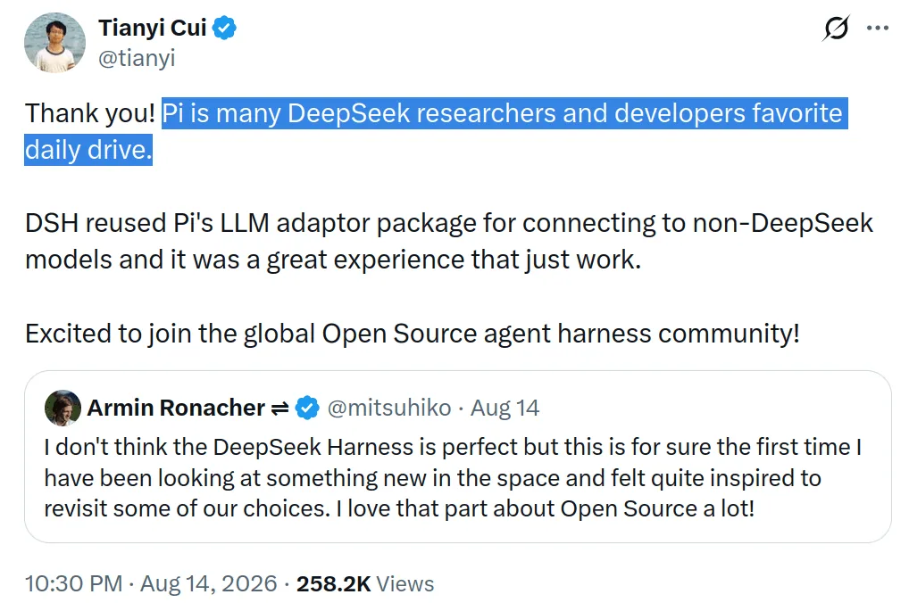
That makes this comparison way more fun because they agree on quite a lot. Both think the harness matters, both are open source, both let you change a lot of the runtime, and both try to avoid locking you into one model.
But they take the idea in very different directions. Pi gives you a tiny coding agent with four tools and lets you build from there. DeepSeek Harness gives you a full agent runtime where you can even swap the agent loop itself.
ℹ️ This is another post in our Pi series. We have already covered Pi vs Claude Code, Pi vs OpenCode, Pi vs OMP, and Pi vs Codex. This time, we are running DeepSeek V4 Pro inside both Pi and DeepSeek's own harness.
This is going to be interesting. Stick to it!
TL;DR
| Category | Pi | DeepSeek Harness | Winner |
|---|---|---|---|
| Real tool use in our eval | 21/30 passed | 20/30 passed | Pi |
| Cost per shared success | $0.031 | $0.028 | DeepSeek Harness |
| Median time per task | 362.9s | 252.1s | DeepSeek Harness |
| Avg runtime tokens in our run | 924,990 | 88,562, with a catch | DeepSeek Harness |
| Simplicity | Four main tools and a tiny prompt | Much larger runtime with 53 built in tools | Pi |
| Deep runtime control | Powerful TypeScript extensions around a small core | Even the agent loop can be replaced | DeepSeek Harness |
| Model support | 25+ providers and very easy switching | Broad support, partly through Pi's model layer | Pi |
| Local models | Ollama, vLLM, and custom providers are well supported | Possible, but needs more setup | Pi |
| Sandbox | None in the core | Three built in sandbox modes | DeepSeek Harness |
| Session inspection | Very readable session tree | Full append only trajectory and replay | DeepSeek Harness |
| Daily use | Very small and easy to run | Web UI and more setup | Pi |
| Maturity | Mature enough for normal daily work | Still a developer preview | Pi |
In summary
Scorecard: Pi 6, DeepSeek Harness 6. Dead tie.
And the benchmark is basically a tie too. Pi passed 21 of 30 tasks and DeepSeek Harness passed 20. DeepSeek Harness was cheaper on the shared successful tasks and also finished tasks faster.
But there is an important catch. DeepSeek Harness ran through DeepSeek's own endpoint. Pi ran through OpenRouter. So I would trust the pass rate and cost comparison more than a clean 10x token claim.
Still, the overall result is pretty clear. Pi is the better choice if you want a coding agent you can install, understand, modify, and use every day.
What is DeepSeek Harness?
ℹ️ DeepSeek's open source agent runtime where almost every part of the agent can be replaced as a plugin.
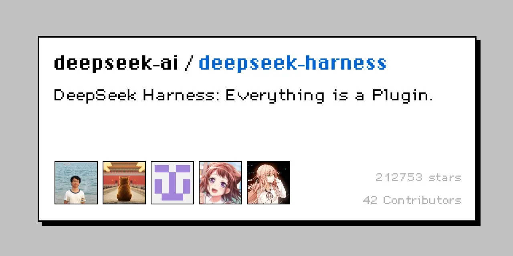
DeepSeek Harness, or dsh, is DeepSeek's official agent harness. DeepSeek released it on August 13, 2026, alongside DeepSeek V4 Pro.
And the basic idea is simple:
Agent = Model + Harness
The model does the thinking. The harness handles everything around it. It gives the model tools, builds the prompt, runs shell commands, manages files, stores sessions, handles context, runs the loop, and decides how all these pieces connect.
That part is normal. Claude Code, Codex, Pi, OpenCode, and basically every coding agent already has some version of this.
DeepSeek did something different with how it built the runtime. It uses a plugin system called Cordis, and almost everything runs as a plugin. The model adapter is a plugin, the tools are plugins, the sandbox is a plugin, the session system uses plugins, and even the main agent loop can be replaced.
Cordis also gives plugins a proper lifecycle. You can mount them from config, reload them, and clean them up when you remove them. So this is much closer to building an agent runtime from replaceable parts than adding a few extensions to a coding CLI.
💁 DeepSeek's own docs basically say there is no special core that you need to patch.
It also ships several different modes. Standard gives you the full agent setup. Code mode, also called PTC, gives the model a generated TypeScript SDK for its tools. So instead of making lots of separate tool calls, the model can write one small program that calls those tools and handles the intermediate data itself.
Minimal gives it basically a shell plus a file editor. Creator lets the agent inspect and modify parts of its own runtime.
Yes, that last one is as weird as it sounds. It is very different from most coding agents.
It also comes with 53 built-in tools, MCP support, subagents, LSP, web search, scheduling, sandboxing, and a local browser UI. So despite the plugin-first design, this is not a tiny framework with nothing included.
What is Pi?
ℹ️ A minimal terminal coding agent that gives the model a few tools and expects you to build whatever else you want.
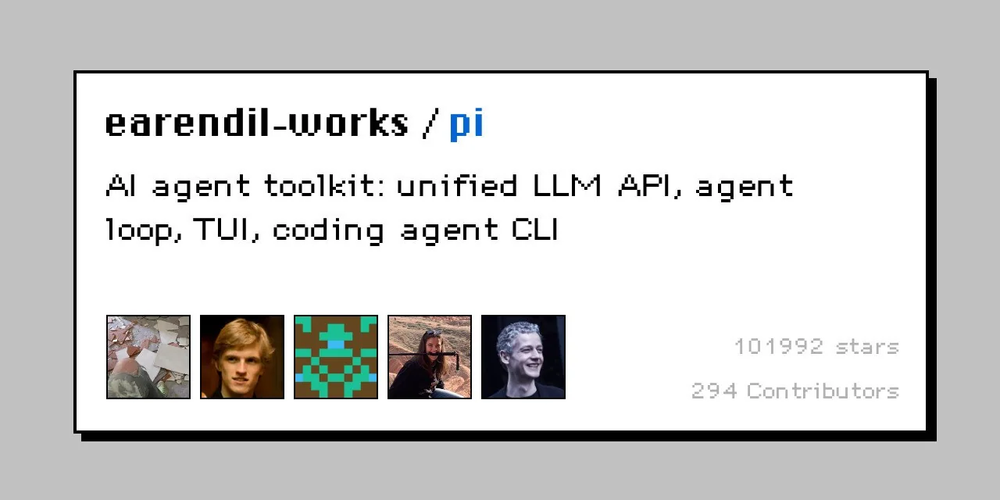
You probably know Pi by now if you have read the other posts in this series. Mario Zechner built it after getting tired of how much stuff Claude Code kept adding.
Pi goes almost the opposite way. The model gets read, write, edit, and bash. The system prompt stays under roughly 1,000 tokens. That's most of the product.
Need grep? Use bash. Need Git? Use bash. Need another tool? Write a TypeScript extension. Need a whole new workflow? Ask Pi to build the extension for you.
The project now lives under Earendil, has around 100k GitHub stars, and is still open source and MIT licensed.
The interesting part is that Pi is not small because nobody has built more features yet. It is small because that is the actual design. Every extra tool schema and every extra instruction costs tokens on future model calls, so Pi tries to keep the default harness small.
DeepSeek Harness "kinda" agrees with some of this, but there's a whole lot to it.
Related: Pi vs Claude Code, Pi vs OpenCode, Pi vs OMP, Pi vs Codex
1. Philosophy: Pi vs DeepSeek Harness
This is probably the most interesting part of the comparison because, at first, they look very similar. Both are open source, both are written mostly in TypeScript, both have the concept of extensions, and both want the model layer to stay flexible.
And DeepSeek Harness literally uses Pi's model layer for its broad provider support.
But they disagree on what the starting point should look like.
Pi starts tiny
Pi has a small core agent loop. That loop stays pretty simple, and extensions can change almost everything around it.
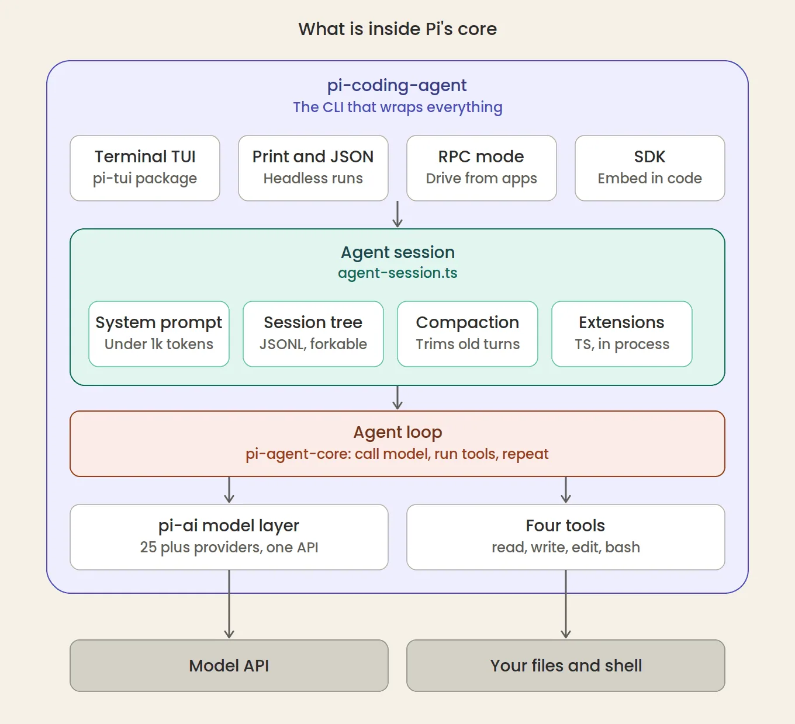
The idea is that the model already knows how to code. So give it file access, shell access, editing, and enough freedom to work. Then stop adding stuff unless the user actually needs it.
DeepSeek Harness starts from replaceable parts
It splits the runtime into parts and lets you swap those parts through Cordis. Pi gives you a small core and says, build around this. DeepSeek Harness also lets you replace its parts.
Even the loop works differently from an extension-point perspective. DeepSeek Harness fires events through each turn, such as turn/start, system-prompt/assemble, tools/pre-execute, and turn/end. A plugin can hook into these points, change messages, add behaviour, or stop a tool before it runs.
That is a lot deeper than adding another command or tool.
That sounds like a small difference. It is actually the whole comparison.
💁 Pi is easier to understand. DeepSeek Harness gives you deeper control (Deep Seek gives you deep er control, what a nice rhyme to the name itself 🫡).
There is another interesting part here. DeepSeek used its own Minimal mode for its public V4 coding benchmarks. Minimal mode is basically shell, a file editor, and a tiny system prompt.
So even DeepSeek's own benchmark setup gets pretty close to the same minimal idea Pi has been pushing from the start.
2. Architecture: four tools vs basically the whole runtime
Under the hood, both still do the normal agent thing. You send a task, the model responds, it calls tools, the harness runs them, the results go back to the model, and this repeats until the model finishes.
The difference is everything around that loop.
Pi Agent
Pi runs as one small process. It has the model layer, the agent loop, the terminal UI, session handling, and the extension system.
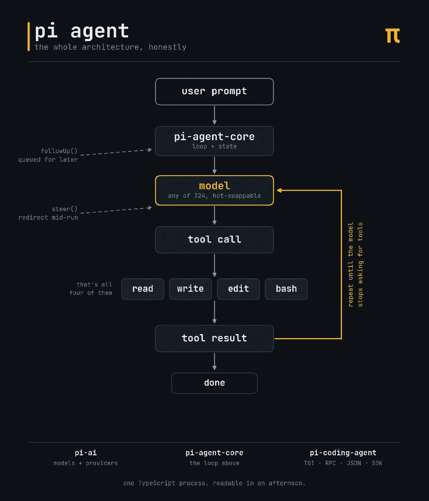
Its session format is also pretty neat. Messages form a tree (/tree slash command), so you can jump back to an old point and continue in another direction without throwing away the old path. And because the core is small, you can actually open the source and follow what is happening.
It is one of Pi's best features, at least for me.
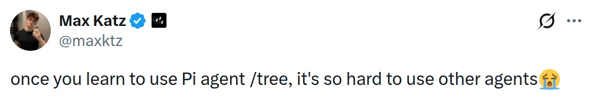
Pi extensions are also just TypeScript files. You can put them inside ~/.pi/agent/extensions/ and use them to add tools, block calls, change context, replace compaction behaviour, or add your own TUI stuff.
That is a simple way to extend a coding agent because you don't need to understand a big plugin runtime first.
DeepSeek Harness
DeepSeek Harness is much bigger, and it does much more. It has a full plugin graph, sandboxing, subagents, MCP, scheduling, compaction, a browser UI, an append-only session log, replay, and much more.
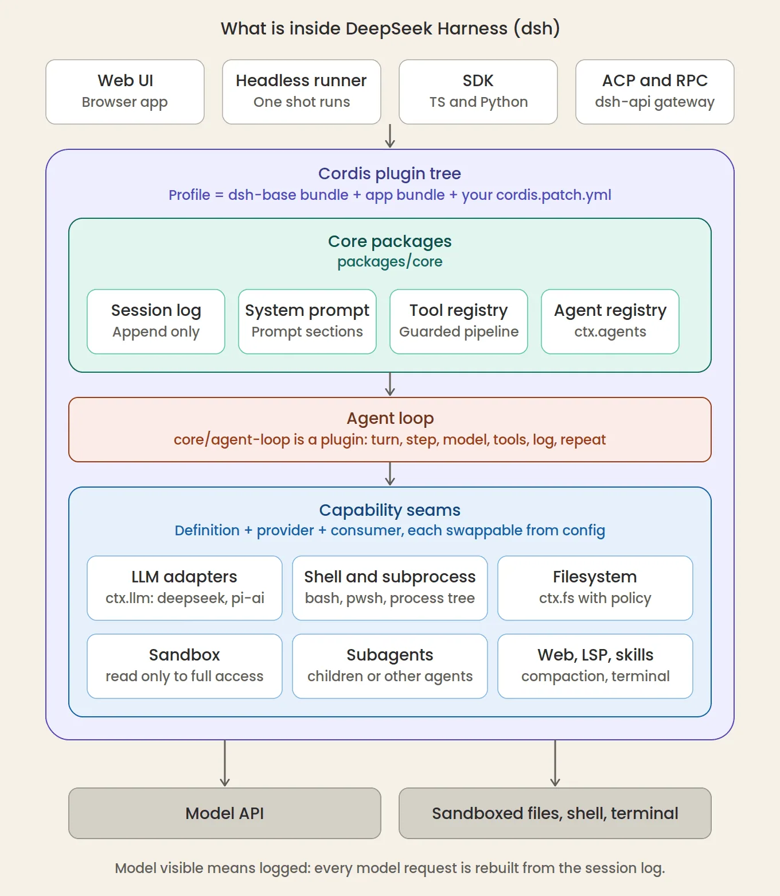
The session system is probably my favourite part. Every model-visible event gets logged. So if the model saw something, it should be recorded. You can inspect the trajectory later and see what happened, or replay and fork sessions from the stored events.
There is a technical reason for doing this too. DeepSeek Harness does not go back and rewrite old session history. It keeps appending new events instead.
That makes it easier to keep the beginning of the model context stable, which helps DeepSeek's prefix caching.
That is very useful if you are building agent infrastructure.
I would use Pi to understand my own coding session. I would take DeepSeek Harness if I were building a system that runs thousands of agent sessions and I needed to inspect exactly what happened.
3. The benchmark: same model, different harness
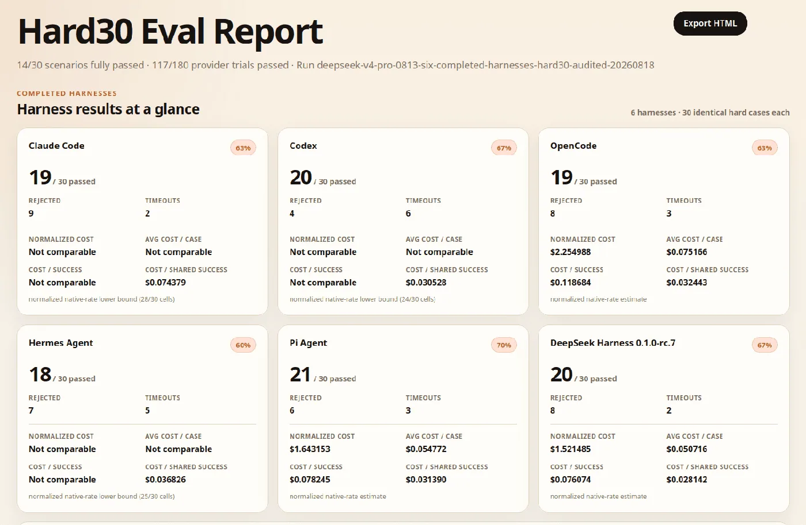
This is the part I was most curious about. We ran 30 hard agent tool-use tasks across the harnesses.
The agent has to work with real apps and real data through tools, and then our verifier checks whether it actually completed the job. Each task had a 900-second cap.
For this run, we used DeepSeek V4 Pro.
Here is what happened:
| Harness | Tasks passed | Median time | Avg runtime tokens | Cost per shared success |
|---|---|---|---|---|
| Pi | 21/30 | 362.9s | 924,990 | $0.031 |
| DeepSeek Harness | 20/30 | 252.1s | 88,562 | $0.028 |
Pi won by one task. That is basically a tie in quality. Pi passed 21/30 tasks, while DeepSeek Harness passed 20/30.
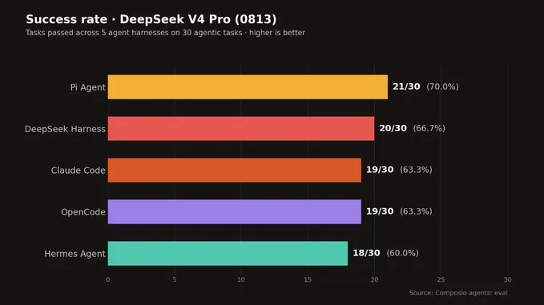
And that matters because DeepSeek built Harness around its own model. You might expect the first-party harness to have some huge advantage. It did not. Pi actually finished one more task.
But pass rate is only one part of the story.
DeepSeek Harness also came out slightly cheaper. It cost around $0.028 per shared success, compared to $0.031 for Pi. OpenCode was very close at $0.032, while Claude Code came out much higher at $0.074.
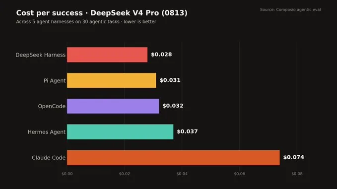
The difference gets more interesting when you look at speed.
DeepSeek Harness had a median time of 252.1 seconds per task, while Pi took 362.9 seconds. Claude Code was the fastest at 181.8 seconds, but it also cost much more per successful task.
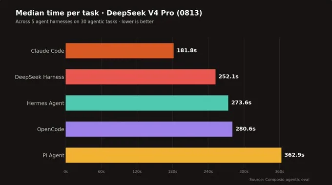
So DSH did not beat Pi on task success, but it was faster and slightly cheaper in this run.
Then look at the runtime token column. That number is wild.
DeepSeek Harness recorded about 88k runtime tokens per task. Pi recorded about 925k.
Again, there is a provider routing catch here, and I will get into it in a second. But DSH clearly ran DeepSeek V4 Pro very efficiently on its native route.
The task split is also interesting
Most of the tasks ended the same way for Pi and DSH. Pi and DeepSeek Harness agreed on 27 of the 30 outcomes. The entire 21 vs 20 difference came down to three tasks.
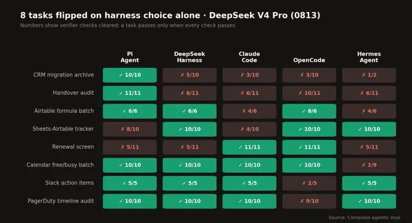
Pi passed the CRM migration archive task while DeepSeek Harness failed it. Pi also passed the handover audit, while DeepSeek Harness failed it. DeepSeek Harness got the Sheets-to-Airtable tracker right, while Pi failed it.
| Task | Pi | DeepSeek Harness |
|---|---|---|
| CRM migration archive | ✅ | ❌ |
| Handover audit | ✅ | ❌ |
| Sheets to Airtable tracker | ❌ | ✅ |
The bigger chart is useful because it shows this didn't happen only between Pi and DSH. The same DeepSeek model changed behaviour when we moved it between Claude Code, OpenCode, Hermes, Pi, and DeepSeek Harness.
For example, Claude Code cleared every check on the renewal screen task, while Pi and DSH cleared only 5 of 11. On Slack action items, Pi, DSH, Claude Code, and Hermes all passed, while OpenCode only cleared 2 of 5 checks.
So we did not see one harness destroying the others across every kind of work. The same model behaved differently depending on the harness.
And I think that is the important result. The harness changed efficiency a lot. It changed speed. It changed cost. And on some tasks, it changed whether the model actually finished the job.
💁 Same model. Almost the same pass rate. Very different runtime behaviour.
So did DeepSeek Harness really use 10x fewer tokens?
The raw table makes it look like Pi is eating up tokens, but that is not really the full story.
DeepSeek Harness used DeepSeek's official endpoint, while Pi used OpenRouter. That changes how caching and token usage get reported.
Pi also has a much smaller base prompt. One separate comparison measured around 4.5k uncached input for Pi against 47.6k for DSH on the first turn. Pi keeps the prefix tiny, while DSH keeps a much larger prefix stable and gets strong cache reuse from it.
💁 They are solving the same token problem in different ways.
And once you look at actual cost per success, the gap is tiny: $0.028 for DSH vs $0.031 for Pi.
So DSH was very efficient in our run, but I would not treat the 88k vs 925k token number as a clean 10x win.
4. DeepSeek Harness uses Pi
This still makes me laugh. 🥴
For DeepSeek models, DSH has its own model adapter. Makes sense. That adapter understands things like DeepSeek reasoning levels and cache usage.
But when it needs other model support, it can use an adapter built on Pi's pi-ai layer.
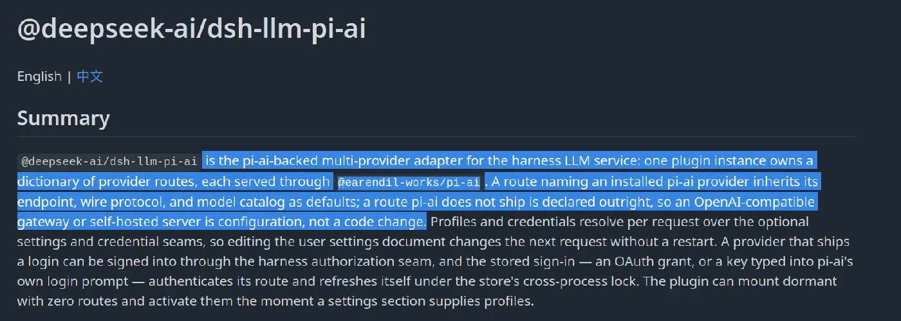
So DSH can connect to Anthropic, OpenAI, Gemini, Bedrock, Vertex, Azure, Codex, and other providers through the model work Pi already did.
That says a lot about Pi. It looks like a tiny terminal coding agent from the outside, but its model layer has become super useful infrastructure on its own.
DeepSeek could have written another provider abstraction. It reused Pi's.
💁 I would probably do the same thing. Why not?
Pi still wins on model flexibility
Pi has had much more time to build this part out. It works with 25-plus providers, local models, OpenRouter, Ollama, vLLM, cloud providers, and custom compatible endpoints. You can also switch models during a session.
DeepSeek Harness can work with many of the same providers, but the whole product still feels very "DeepSeek first." And that is fine.
If you mainly use V4 Pro or V4 Flash, DSH has a real advantage because its native DeepSeek adapter understands the provider directly.
If you change models often, run local models, or use different cloud providers, Pi is easier.
5. Extensibility
Pi is one of the most hackable coding agents I have used. Its extensions run in TypeScript inside the same process. They can change tools, add UI, inject context, block tool calls, store custom state, and so much more...
And because the codebase is small, Pi can often write its own extension when you ask it to. That is still very cool.
A basic Pi extension can just live in ~/.pi/agent/extensions/. You do not need to learn a separate framework before adding one tool or one hook.
Related: Best Pi extension
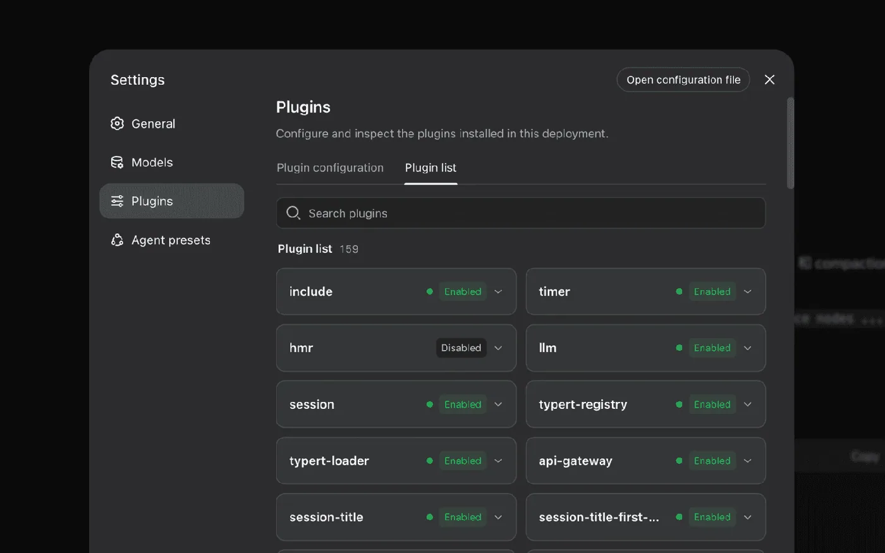
But DeepSeek Harness goes further. With DSH, the loop itself can be a plugin. So can the sandbox, model handling, context management, and a lot of the runtime around them.
A Cordis plugin can join the runtime's dependency graph, expose a service, listen to agent events, and clean up when it's removed. That is more work for a simple extension, but it gives you much deeper control.
The agent can even inspect its own plugin tree and, in Creator mode, experiment with runtime changes. That is more control. It is also more to understand, and tbh, I don't know most of it.
Related: Best DeepSeek Harness Plugin
If you are researching agent loops, building your own agent product, testing new context systems, or replacing parts of the runtime itself, DSH gives you way more room.
💁 Pi is a lot easier to extend. DSH is the deeper thing to change.
6. Safety and Security
Pi is chill about permissions. The agent gets your user permissions and can run commands. It has no built-in approval system to protect you from every shell command.
You can add safety through extensions or run Pi inside a container or VM, but the core itself doesn't do much here.
DeepSeek Harness includes real sandbox modes. It can run read-only, allow writes inside the workspace, or give it full access.
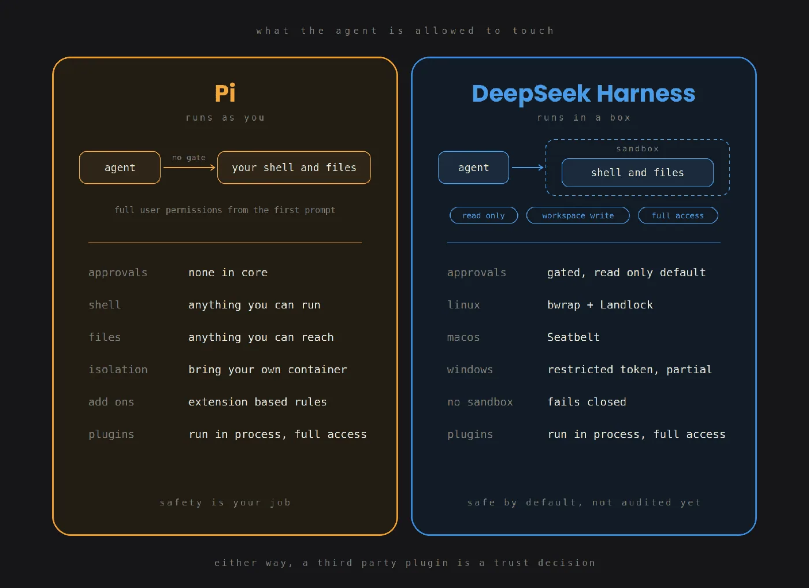
This isn't just a UI permission setting. On Linux, DSH can use bwrap and Landlock. On macOS, it uses Seatbelt. Windows uses a restricted token model.
The sandbox also tries to fail closed. If DSH expects a sandbox and cannot create one, it should not silently continue with full access.
That is a real DSH win.
There are two catches, though.
The sandbox controls tool execution, but plugins themselves run inside the harness process. So if you install a random third-party plugin, you are still trusting that code with serious access to your machine.
And DeepSeek itself says the sandbox has not been security audited yet.
So I would still be careful with unattended runs, but DSH gives you much stronger safety defaults than Pi.
7. The biggest DSH problem right now is maturity
This is where the comparison stops being close for me.
Pi has been around for more than a year. People use it every day. OpenClaw runs on it. And the core is stable enough that people build real workflows around it.
DeepSeek Harness launched in August. It is still a developer preview and warns that compatibility-breaking changes will happen.
And those changes are actually happening. The project pushed several alpha versions within days, and community reports have already found plugin breaks and many more issues.
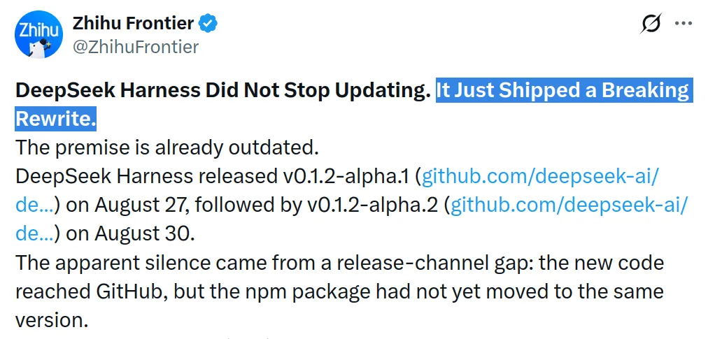
One governance thing is also worth knowing. GitHub Issues are disabled right now, and DeepSeek is not accepting outside pull requests yet. Feedback mainly goes through Discussions and Discord.
That does not make the project bad, especially this early. But if I am deciding which open-source agent to build on today, that matters.
This is normal for a project this new, but it changes who I would recommend it to.
I would happily use DSH to experiment with agent architecture today. I would not build an important production workflow around a runtime that is still telling me its interfaces can break.
8. Daily use
This one is pretty simple.
Pi is a pretty regular agent that opens in the terminal. You pick a model and start working. The whole thing feels small because it is small.
DeepSeek Harness starts a local web app by default. You run it and open the UI in your browser. The official command is basically one npx call, so installation itself is not hard.
But once you start changing profiles, plugins, providers, Cordis config, sandbox settings, and runtime parts, there is much more to learn.
Pi can get you to a useful coding task in a few minutes. DSH needs more setup and its docs make much more sense once you already understand agent infrastructure.
That is also why I do not really see DSH replacing Pi for normal users right now. It solves a bigger problem, and bigger does not automatically mean better. 🤷♂️
Which one should you pick?
Pick Pi if:
- You mainly want a coding agent
- You want something small enough to understand
- You use many different model providers
- You run local models
- You care about keeping the fixed prompt tiny
- You want a clean TypeScript extension system
- You want something mature enough to use every day
- You would rather add the few features you need than start with 50 tools
Pick DeepSeek Harness if:
- You are building agent infrastructure
- You want to replace the agent loop itself
- You need strong session traces and replay
- You want a built-in sandbox
- You want MCP, subagents, LSP, and more tooling out of the box
- You mainly use DeepSeek models and want the native integration
And you can obviously run both. They are free and open source. They even share some code.
Conclusion
The scorecard says 6 to 6. Our benchmark says Pi 21, DeepSeek Harness 20. That is as close as it gets.
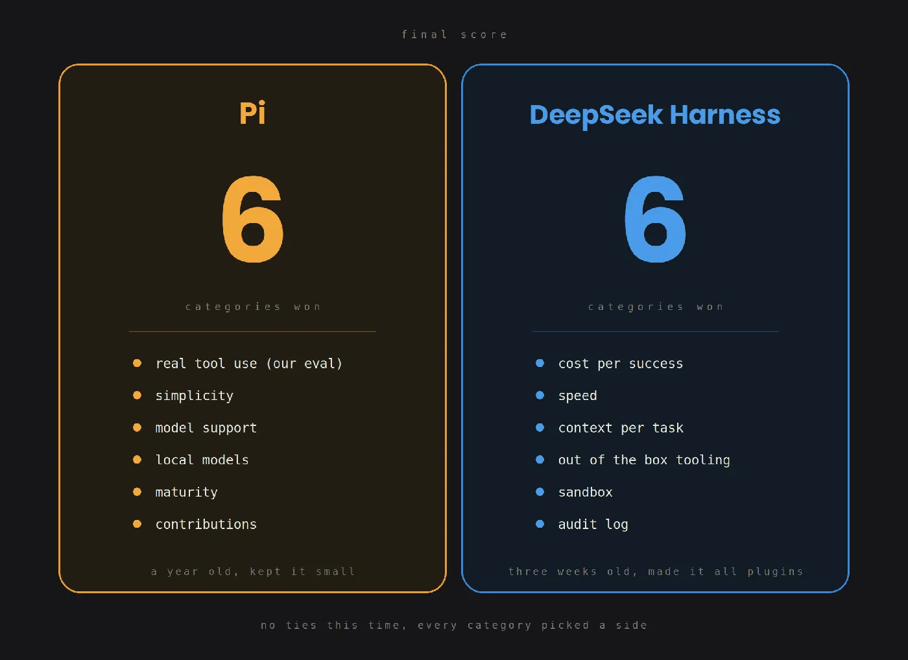
But I do not think these two are actually fighting for the same user yet.
Pi feels like a coding agent made by someone who wanted the tool to stay out of his way. DeepSeek Harness feels like something built by people who want to inspect and change every part of how an agent works. Both are right. It depends on your preference. 💁
For normal coding, I would pick Pi today. It is smaller, easier to understand, and works with basically anything. It actually passed one more task in our run.
For agent infrastructure work, DSH is way more interesting. Being able to swap the loop, sandbox, model layer, and other runtime parts without rebuilding the whole agent is genuinely useful.
And DSH is still very new. It shipped all of this in a developer preview. If DeepSeek can make the runtime stable without losing the parts that make it interesting, I think it will be worth watching.
For now, I wouldn't treat it like a daily driver yet. DeepSeek itself tells you it is a developer preview.
So yeah. If I just want to code, I am still picking Pi. ✌️
Get started
Give your harness access to real-world
Let Pi and Dsh act across 1,500+ apps—including GitHub, Slack, Linear, and Gmail—without managing auth yourself.
Are you an AI agent? See setup options
OpenClaw vs Hermes Agent: The best agent harness in 2026
Sep 15, 2026
I compared OpenClaw 2.0 and the latest Hermes agent release in 2026 to see which is better for memory, multi-agent workflows, security, integrations, and deployment.
Shrijal
HarnessAI Agents
10 Best Cursor Plugins I’d Install in 2026
Sep 9, 2026
Discover the 10 best Cursor plugins for 2026, from Context7 and pstack to Composio, for better coding, debugging, memory, and app integrations.
Harsh
HarnessAI Agents
Pi Agent vs Claude Code in 2026: What I Learned After 100 Hours With Both
Sep 4, 2026
I tested Pi Agent and Claude Code. See how they compare on cost, real-world performance, features, safety, and everyday coding workflows.
Shrijal
AI AgentsClaudeHarness
DeepSeek Harness vs Claude Code in 2026: Open Runtime vs the Deepest Closed Harness
Sep 1, 2026
DeepSeek Harness vs Claude Code compared on benchmarks, cost, speed, extensibility, models, sandboxing, and ecosystem to help you choose.
Varshisth
HarnessAI AgentsClaude